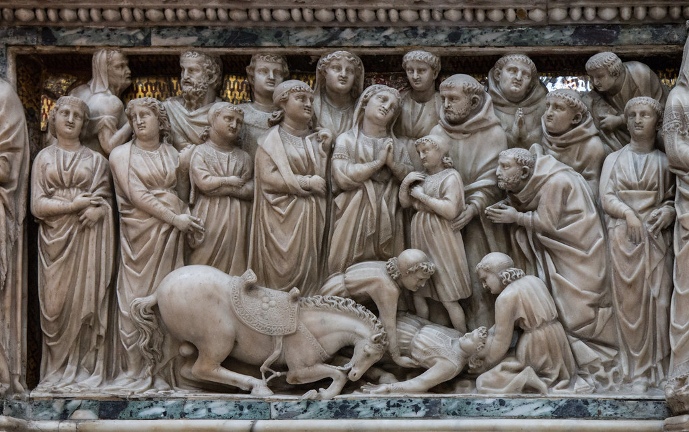
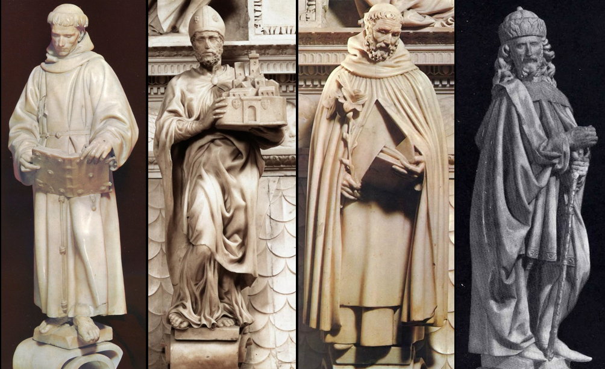

Second slide label
Some representative placeholder content for the second slide.

Third slide label
Some representative placeholder content for the third slide.
Some representative placeholder content for the second slide.
Some representative placeholder content for the third slide.
Il progetto
Scarica l'app per ammirare con una video-guida l'intero complesso della Basilica di San Domenico